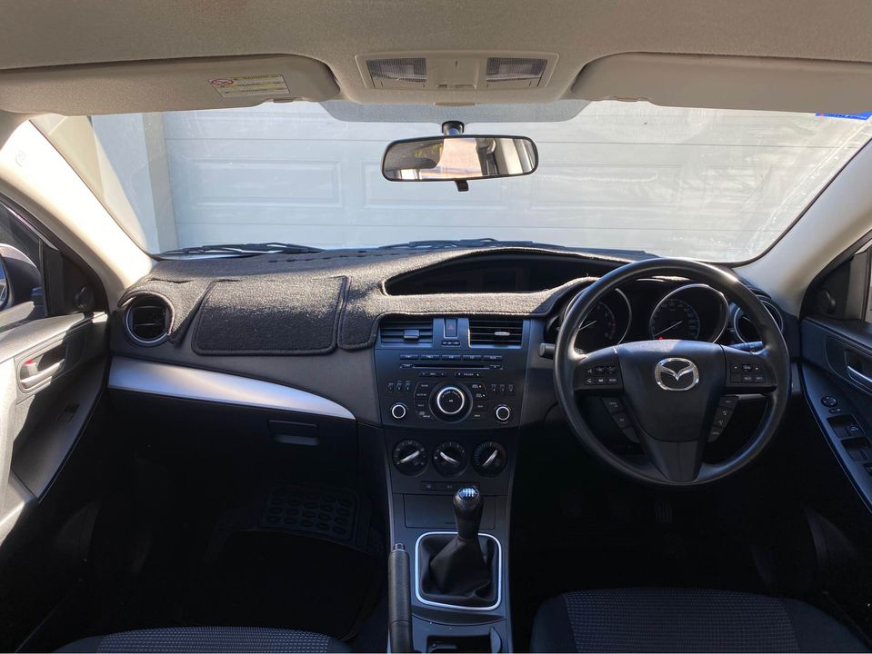

Are you searching for quality auto parts for your Mazda? Maybe you’re doing repairs on it and found some parts need replacing. This shouldn’t be any problem for us here at Jollys Auto Parts. We’re the leading Mazda wreckers Perth wide, so waste no time by contacting us and getting the part you need. You can choose to have us deliver your selected part, or you can approach your nearest Jollys yard and pick a part of your choice from our vast inventory. With competitive pricing and a professional and knowledgeable team who are here to help, why would you go anywhere else?
Do you have a Mazda CX-5, Mazda CX-3 or Mazda CX-5 with part damage or worse? We’re the right place for you. If you need some of the following Mazda parts, call us at Jollys Auto Parts now. Mazda 1-year service manual – $45 Mazda light bulbs – $20 Mazda gear shift boots – $28 Mazda power window switch covers – $29 Mazda clutch lever – $26 Mazda parking brake cable – $34 Mazda brake caliper – $14 Mazda 2-year service manual – $80 Mazda bonnet wiper – $12 Mazda front passenger side door handles – $30 Mazda washer fluid refill – $28 If your car is in need of parts, make sure you choose us for your collision repairs. To locate our nearest Jollys Auto Parts, just go to our official website.
A general rule for used cars is that they are not intended to be driven in a heavy traffic environment for a long period of time. Heavy traffic is problematic for many different types of cars that you might own. Many cars are not designed to be used on the road, so they are not suitable for this traffic. The same holds true for Mazdas, as they don’t have crash energy absorption and are more susceptible to high impact crashes. In addition, with a typical 20-year-old car, the panel gaps are very poor and the frame and suspension need to be fixed. These are just some of the problems that you can experience when buying a car with major body repairs. When it comes to having a Mazda wreckers Perth help you, we understand the importance of having a quality looking and performing car.
Just like other car repair shops and collision shops, you can trust us. We only sell genuine parts and provide expert after-sales support. This will help keep your Mazda on the road, and you out of trouble. We also feature a national parts network for repairs in case of a breakdown. Call us today to see what we can do for you and your Mazda.
Just imagine picking a part for your Mazda and then being able to put it back to its original condition, without having to waste time and money trying to rewire a fuse or taking it to a mechanic for assistance. Have you ever wondered why certain parts are more expensive than others? It’s all because they need to be meticulously sourced from reliable sources. Don’t hesitate to check out our entire parts collection and choose a suitable part for your Mazda.

If you’re looking for a reputable auto repair shop that offers great deals on parts, Mazda is the place to go. We have some of the cheapest prices out there on car parts, and we’re known as one of the most trusted Mazda wreckers, too. Contact us today, and we’ll take care of you as quickly as possible. We’re open Monday through Saturday from 9 am to 5 pm, and we do not close on Sundays. More details More details about the best Mazda wreckers Perth, check out the rest of our website. Don’t waste any more time, click here to call us on 1300 465 124, email us at service@jollys.com.au, or give us a call right now.
Buying a replacement part for your Mazda is essential for the long term reliability of your car. Having the right parts on hand will keep you on top of all your maintenance, and help you avoid unnecessary costs. Don’t waste any more time and get in touch with us today to find the part that you need for your car. We’d love to provide you with expert advice on your next project.
Address:103 Sheffield Rd, Welshpool WA 6106
Phone: (08) 9358 1392